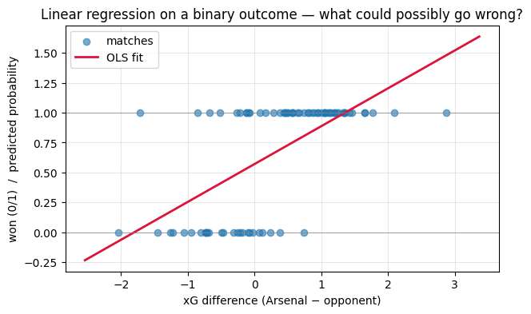
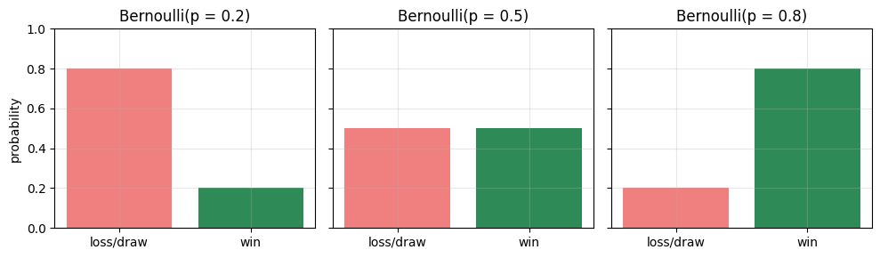
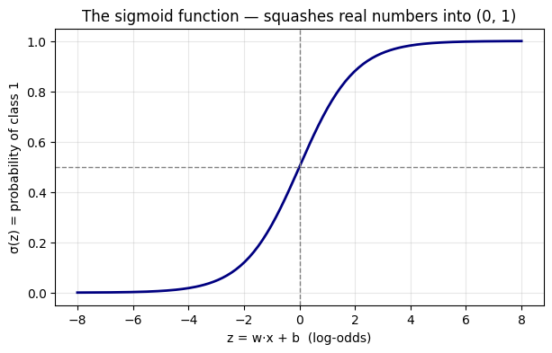
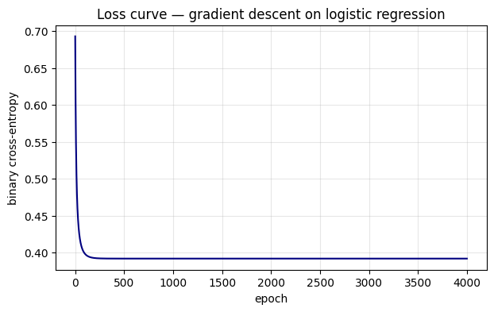
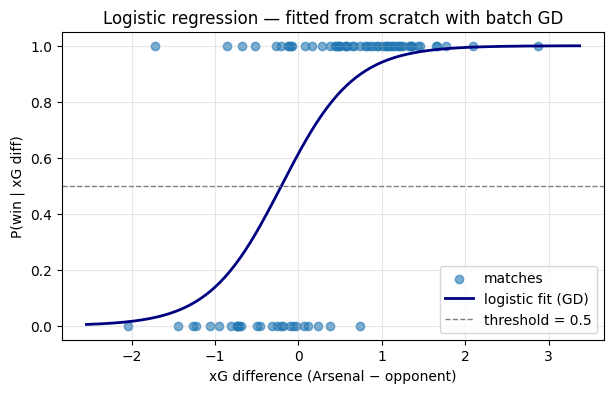
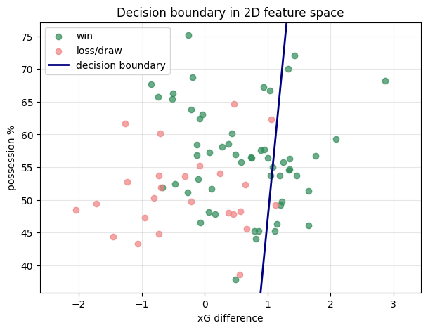
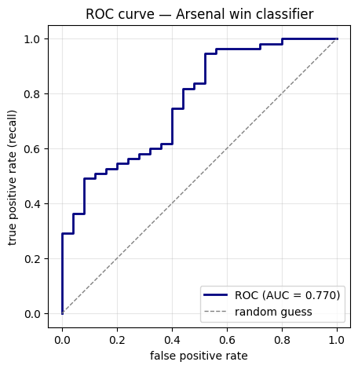
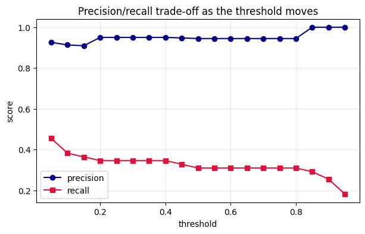

Classification — Logistic Regression from Scratch¶
"You can't predict football, Bill." — Sir Alex Ferguson
Maybe not perfectly. But with a little probability theory, a sigmoid, and some gradient descent, we can do a lot better than a coin flip.
This notebook is the deep dive on binary classification that complements our earlier work on regression. We start by asking why ordinary linear regression breaks for 0/1 outcomes, build the logistic model from the Bernoulli distribution, derive the cross-entropy loss as a maximum likelihood estimator, and then implement gradient descent from scratch to fit it. Finally, we look at what "good" actually means for a classifier: confusion matrices, precision, recall, F1, ROC, and AUC.
Throughout we will be predicting whether Arsenal wins a Premier League match — first from a single feature (expected goals difference), then from two features so we can draw a decision boundary.
Learning Objectives¶
After working through this notebook, you should be able to:
- Explain why linear regression fails for binary outcomes and why we need a probability-bounded model instead.
- Recognise the Bernoulli and Binomial distributions as the natural model for a 0/1 outcome and an aggregated count of successes.
- Move fluently between probability, odds, and log-odds (logit), and recover the sigmoid by inverting the logit.
- Derive the binary cross-entropy loss as the negative log-likelihood of the Bernoulli model.
- Derive the gradient of cross-entropy and recognise the elegant form \(\nabla_w L = X^\top(\hat{p} - y)\).
- Implement vanilla batch gradient descent from scratch for logistic
regression and verify your weights match
statsmodels.Logit. - Visualise the decision boundary of a fitted classifier in 2D.
- Read a confusion matrix and compute precision, recall, F1-score, ROC curve, and AUC.
- Explain when accuracy is misleading and how to pick a useful classification threshold.
- Sketch how the binary case generalises to multiclass classification via the softmax function.
Setup¶
A standard scientific stack. We pin the seed so every plot in this notebook is reproducible — change the seed at home and rerun to see how the story holds up under fresh randomness.
import numpy as np
import pandas as pd
import matplotlib.pyplot as plt
import statsmodels.api as sm
from sklearn.metrics import (
confusion_matrix,
precision_score,
recall_score,
f1_score,
accuracy_score,
roc_curve,
auc,
)
rng = np.random.default_rng(42)
plt.rcParams["figure.figsize"] = (7, 4)
plt.rcParams["axes.grid"] = True
plt.rcParams["grid.alpha"] = 0.3
1. Why not linear regression for 0/1 outcomes?¶
Imagine you're an Arsenal data analyst. For each Premier League match this season you have:
- \(x\) = expected goals difference (Arsenal's xG minus the opponent's xG). Positive means Arsenal generated better chances; negative means the opponent did.
- \(y\) = outcome — 1 if Arsenal won, 0 otherwise.
Let's simulate one season of matches and try the obvious thing first: fit a straight line.
# Simulate one season of matches
n_matches = 80
xg_diff = rng.normal(0.3, 1.2, size=n_matches) # xG advantage per match
# True data-generating process — wins follow a logistic relationship
true_w, true_b = 1.8, 0.4
true_p = 1 / (1 + np.exp(-(true_w * xg_diff + true_b)))
y = rng.binomial(1, true_p)
matches = pd.DataFrame({"xg_diff": xg_diff, "won": y})
matches.head()
| xg_diff | won | |
|---|---|---|
| 0 | 0.665660 | 1 |
| 1 | -0.947981 | 0 |
| 2 | 1.200541 | 1 |
| 3 | 1.428678 | 1 |
| 4 | -2.041242 | 0 |
# Fit OLS — pretend the binary outcome is just a real number
X_ols = sm.add_constant(matches["xg_diff"])
ols_fit = sm.OLS(matches["won"], X_ols).fit()
x_grid = np.linspace(matches["xg_diff"].min() - 0.5, matches["xg_diff"].max() + 0.5, 200)
ols_pred = ols_fit.params["const"] + ols_fit.params["xg_diff"] * x_grid
fig, ax = plt.subplots()
ax.scatter(matches["xg_diff"], matches["won"], alpha=0.6, label="matches")
ax.plot(x_grid, ols_pred, color="crimson", lw=2, label="OLS fit")
ax.axhline(0, color="grey", lw=0.5)
ax.axhline(1, color="grey", lw=0.5)
ax.set_xlabel("xG difference (Arsenal − opponent)")
ax.set_ylabel("won (0/1) / predicted probability")
ax.set_title("Linear regression on a binary outcome — what could possibly go wrong?")
ax.legend()
plt.show()

Three problems jump out:
- Predictions escape \([0, 1]\). For matches with a very large positive xG difference the fitted line predicts probabilities above 1; for very negative xG it predicts below 0. Probabilities don't do that.
- Linearity is wrong. Going from xG diff \(-2 \to -1\) probably matters a lot more for win probability than going from \(+3 \to +4\) (a thrashing is still a thrashing). A straight line treats them as equal.
- Residuals are weird. OLS assumes normal residuals. With a 0/1 response, the residuals can only take two values for any given \(x\), so the Gaussian assumption is badly violated.
We need a model that produces a number between 0 and 1 by construction. That's where the sigmoid comes in — but to motivate it properly we first need a quick refresher on the right probability distribution for a binary outcome.
2. Bernoulli & Binomial — a quick refresher¶
A Bernoulli random variable models a single yes/no event:
Mean \(\mathbb{E}[Y] = p\), variance \(\text{Var}(Y) = p(1-p)\).
A Binomial is what you get if you sum \(n\) independent Bernoullis with the same \(p\) — for example, "how many of Arsenal's next 38 matches do they win?"
For modelling a single match outcome, the Bernoulli is exactly the right distribution. The whole task of logistic regression is: let \(p\) depend on features \(x\), and then estimate that dependence from data.
# Visualise: how the Bernoulli mass shifts as p changes
ps = [0.2, 0.5, 0.8]
fig, axes = plt.subplots(1, 3, figsize=(10, 3), sharey=True)
for ax, p in zip(axes, ps):
ax.bar([0, 1], [1 - p, p], color=["lightcoral", "seagreen"])
ax.set_xticks([0, 1])
ax.set_xticklabels(["loss/draw", "win"])
ax.set_ylim(0, 1)
ax.set_title(f"Bernoulli(p = {p})")
axes[0].set_ylabel("probability")
plt.tight_layout()
plt.show()

3. From probability to log-odds (and back)¶
We want a model that maps a real-valued linear combination \(z = w x + b\) — which can be anything in \((-\infty, \infty)\) — to a probability in \((0, 1)\). The trick is to do it in two steps via the odds and the log-odds.
Odds are the ratio of "yes" to "no" probability:
Log-odds (or logit) take the log to stretch the odds onto the whole real line:
Now we can comfortably equate the logit to a linear function of features:
Inverting this gives back \(p\) — and the inverse is the sigmoid (also called the logistic function):
The sigmoid is the bridge between unbounded "score" \(z\) and bounded probability \(p\).
def sigmoid(z):
return 1.0 / (1.0 + np.exp(-z))
z = np.linspace(-8, 8, 200)
fig, ax = plt.subplots()
ax.plot(z, sigmoid(z), color="navy", lw=2)
ax.axhline(0.5, color="grey", ls="--", lw=1)
ax.axvline(0, color="grey", ls="--", lw=1)
ax.set_xlabel("z = w·x + b (log-odds)")
ax.set_ylabel("σ(z) = probability of class 1")
ax.set_title("The sigmoid function — squashes real numbers into (0, 1)")
plt.show()

Three things to remember:
- \(\sigma(0) = 0.5\) — the decision boundary is at \(z = 0\).
- \(\sigma(z) \to 1\) as \(z \to +\infty\) and \(\sigma(z) \to 0\) as \(z \to -\infty\).
- \(\sigma'(z) = \sigma(z)\,(1 - \sigma(z))\). We will use this when we derive the gradient — it is what makes the algebra collapse so neatly.
4. The logistic regression model¶
Putting it all together, logistic regression is the model
Equivalently:
Two language points worth nailing down:
- The score \(z = w^\top x + b\) is the log-odds of class 1.
- The decision boundary is the set of \(x\) where \(z = 0\) (equivalently \(P(y=1\mid x) = 0.5\)). For one feature, that's a single threshold; for two features, it's a straight line; for \(d\) features, a \((d-1)\)-dim hyperplane.
Despite being called "regression", this is a classification model — the output is a probability, and we usually convert it to a 0/1 prediction by thresholding at 0.5 (though we'll see later this threshold is a knob you can tune).
5. Where does the loss come from? Maximum likelihood¶
We have a parametric model \(P(y=1\mid x) = \sigma(w^\top x + b)\). To fit it to data we need a loss function — a single number that says "how badly is the model doing on this dataset?". For logistic regression, that loss is not chosen arbitrarily. It falls out of maximum likelihood estimation of the Bernoulli model.
Suppose we have \(n\) matches \((x_i, y_i)\) with \(y_i \in \{0, 1\}\), and write \(\hat{p}_i = \sigma(w^\top x_i + b)\). Treating each match as an independent Bernoulli trial, the likelihood of the whole dataset is
That clever-looking product is just "use \(\hat{p}_i\) when \(y_i = 1\), use \(1 - \hat{p}_i\) when \(y_i = 0\)" written compactly. Taking \(-\log\) to turn the product into a sum (and a maximisation into a minimisation) gives the negative log-likelihood:
This expression has a name in machine learning: binary cross-entropy loss. So the "loss function" of logistic regression is not an arbitrary choice — it is exactly the negative log-likelihood of the Bernoulli model.
The bridge: Bernoulli distribution + maximum likelihood = binary cross-entropy loss. This is the connection the notebook is built around.
Conventionally we average over \(n\) to get a per-sample loss:
6. The gradient of cross-entropy¶
To run gradient descent we need \(\nabla_w L\). Using \(\hat{p}_i = \sigma(z_i)\) with \(z_i = w^\top x_i + b\), and the identity \(\sigma'(z) = \sigma(z)(1 - \sigma(z))\), the chain rule gives (after a small amount of algebra that every ML student should do once by hand):
In matrix form, with \(X \in \mathbb{R}^{n \times d}\) stacking the features:
That is the punchline. The gradient is just "predicted minus actual", weighted by the inputs — exactly the same shape as the gradient of squared error in linear regression. Different probabilistic story, same algorithmic move.
The bias gradient is the analogous scalar:
7. Gradient descent from scratch¶
We now turn the maths into code. The recipe is short:
- Start with \(w = 0\), \(b = 0\).
- Compute \(\hat{p} = \sigma(Xw + b)\).
- Compute the gradient \(g_w = \tfrac{1}{n} X^\top (\hat{p} - y)\) and \(g_b = \tfrac{1}{n} \mathbf{1}^\top (\hat{p} - y)\).
- Step: \(w \gets w - \eta\, g_w\), \(b \gets b - \eta\, g_b\).
- Repeat for many epochs and watch the loss go down.
We'll use the single-feature Arsenal data we already simulated, plus a small numerical-stability trick: we clip \(\hat{p}\) away from exactly 0 and 1 before taking logs.
def bce_loss(y, p, eps=1e-12):
p = np.clip(p, eps, 1 - eps)
return -np.mean(y * np.log(p) + (1 - y) * np.log(1 - p))
def fit_logistic_gd(X, y, lr=0.1, n_epochs=2000):
# Vanilla batch gradient descent for binary logistic regression.
n, d = X.shape
w = np.zeros(d)
b = 0.0
losses = []
for _ in range(n_epochs):
z = X @ w + b
p = sigmoid(z)
# gradients
g_w = (X.T @ (p - y)) / n
g_b = np.mean(p - y)
# update
w -= lr * g_w
b -= lr * g_b
losses.append(bce_loss(y, p))
return w, b, np.array(losses)
X1 = matches[["xg_diff"]].to_numpy() # shape (n, 1)
y_arr = matches["won"].to_numpy()
w_hat, b_hat, losses = fit_logistic_gd(X1, y_arr, lr=0.2, n_epochs=4000)
print(f"learned weight w = {w_hat[0]: .4f} (true {true_w})")
print(f"learned bias b = {b_hat: .4f} (true {true_b})")
print(f"final loss = {losses[-1]:.4f}")
learned weight w = 2.3022 (true 1.8)
learned bias b = 0.4690 (true 0.4)
final loss = 0.3918
# Loss curve — the classic monotone descent
fig, ax = plt.subplots()
ax.plot(losses, color="navy")
ax.set_xlabel("epoch")
ax.set_ylabel("binary cross-entropy")
ax.set_title("Loss curve — gradient descent on logistic regression")
plt.show()

# Plot the fitted sigmoid against the data
x_grid = np.linspace(matches["xg_diff"].min() - 0.5, matches["xg_diff"].max() + 0.5, 200)
p_grid = sigmoid(w_hat[0] * x_grid + b_hat)
fig, ax = plt.subplots()
ax.scatter(matches["xg_diff"], matches["won"], alpha=0.6, label="matches")
ax.plot(x_grid, p_grid, color="navy", lw=2, label="logistic fit (GD)")
ax.axhline(0.5, color="grey", ls="--", lw=1, label="threshold = 0.5")
ax.set_xlabel("xG difference (Arsenal − opponent)")
ax.set_ylabel("P(win | xG diff)")
ax.set_title("Logistic regression — fitted from scratch with batch GD")
ax.legend()
plt.show()

8. Sanity check — compare with statsmodels.Logit¶
A from-scratch implementation is only useful if we can verify it against a
trusted library. statsmodels.Logit fits the same model using a
Newton-Raphson solver, so its coefficients should match ours within a
small tolerance.
X_sm = sm.add_constant(matches["xg_diff"])
sm_logit = sm.Logit(matches["won"], X_sm).fit(disp=False)
print(sm_logit.summary().tables[1])
print()
print(f"statsmodels intercept = {sm_logit.params['const']: .4f}, slope = {sm_logit.params['xg_diff']: .4f}")
print(f"our GD intercept = {b_hat: .4f}, slope = {w_hat[0]: .4f}")
==============================================================================
coef std err z P>|z| [0.025 0.975]
------------------------------------------------------------------------------
const 0.4690 0.317 1.482 0.138 -0.151 1.089
xg_diff 2.3022 0.520 4.428 0.000 1.283 3.321
==============================================================================
statsmodels intercept = 0.4690, slope = 2.3022
our GD intercept = 0.4690, slope = 2.3022
The two sets of coefficients agree to a couple of decimal places — a small
gap remains because batch GD with a fixed learning rate hasn't fully
converged, while statsmodels uses a second-order solver. Crank the
epochs or the learning rate up and they'll match more tightly.
This is exactly the same comparison we did for Ridge regression in the Regularization notebook — implementing the algorithm by hand and then checking against a reference is one of the best habits you can build as a data scientist.
9. Two features → a decision boundary you can see¶
With one feature the "boundary" is just a threshold on the x-axis. With two features we can finally see what the classifier is doing — the boundary becomes a straight line in feature space.
We'll add a second feature, possession percentage, and refit.
# Add possession as a second feature
possession = rng.normal(55, 8, size=n_matches) # Arsenal possession %
# Underlying truth: both features matter
z_true = 1.5 * xg_diff + 0.07 * (possession - 50) + 0.2
p_true = sigmoid(z_true)
y2 = rng.binomial(1, p_true)
X2 = np.column_stack([xg_diff, possession])
w2, b2, losses2 = fit_logistic_gd(X2, y2, lr=0.05, n_epochs=8000)
print(f"weights = {w2}, bias = {b2:.3f}")
weights = [15.04475554 -0.15072324], bias = -8.003
# Plot points, colour by class, overlay decision boundary
fig, ax = plt.subplots(figsize=(7, 5))
ax.scatter(xg_diff[y2 == 1], possession[y2 == 1], color="seagreen", label="win", alpha=0.7)
ax.scatter(xg_diff[y2 == 0], possession[y2 == 0], color="lightcoral", label="loss/draw", alpha=0.7)
# Decision boundary: w1*x1 + w2*x2 + b = 0 ⇒ x2 = -(w1*x1 + b) / w2
x1_line = np.linspace(xg_diff.min() - 0.3, xg_diff.max() + 0.3, 100)
x2_line = -(w2[0] * x1_line + b2) / w2[1]
ax.plot(x1_line, x2_line, color="navy", lw=2, label="decision boundary")
ax.set_xlabel("xG difference")
ax.set_ylabel("possession %")
ax.set_title("Decision boundary in 2D feature space")
ax.legend()
ax.set_ylim(possession.min() - 2, possession.max() + 2)
plt.show()

Logistic regression draws a linear boundary. Points above the line are predicted as "win", points below as "loss/draw". The further a point is from the line, the more confident the model is in its prediction (because the log-odds \(z\) is further from zero). That's why logistic regression is sometimes called a linear classifier: even though the sigmoid is curved, the decision surface is flat.
10. Classification metrics — beyond accuracy¶
Once we have predicted probabilities \(\hat{p}_i\), we can convert them to predicted classes by thresholding (default: \(\hat{y} = 1\) if \(\hat{p} \ge 0.5\)). But how do we measure how good the predictions are?
The confusion matrix tabulates predictions against truth:
| Predicted 0 | Predicted 1 | |
|---|---|---|
| Actual 0 | TN | FP |
| Actual 1 | FN | TP |
From it we get four standard metrics:
- Accuracy \(= \dfrac{TP + TN}{TP + TN + FP + FN}\) — overall hit rate.
- Precision \(= \dfrac{TP}{TP + FP}\) — of the matches I predicted Arsenal would win, how many did they actually win?
- Recall (sensitivity) \(= \dfrac{TP}{TP + FN}\) — of the matches Arsenal actually won, how many did I catch?
- F1-score \(= \dfrac{2 \cdot \text{prec} \cdot \text{rec}}{\text{prec} + \text{rec}}\) — harmonic mean; balances the two.
# Predictions on the 2-feature model at the default threshold of 0.5
p_hat = sigmoid(X2 @ w2 + b2)
y_pred = (p_hat >= 0.5).astype(int)
cm = confusion_matrix(y2, y_pred)
print("Confusion matrix:")
print(pd.DataFrame(cm,
index=["actual loss/draw", "actual win"],
columns=["predicted loss/draw", "predicted win"]))
print()
print(f"accuracy = {accuracy_score(y2, y_pred):.3f}")
print(f"precision = {precision_score(y2, y_pred):.3f}")
print(f"recall = {recall_score(y2, y_pred):.3f}")
print(f"F1 = {f1_score(y2, y_pred):.3f}")
Confusion matrix:
predicted loss/draw predicted win
actual loss/draw 24 1
actual win 38 17
accuracy = 0.512
precision = 0.944
recall = 0.309
F1 = 0.466
When accuracy lies. Imagine a season where Arsenal win 95% of their matches (a lovely fantasy). A model that always predicts "win" would have 95% accuracy without learning anything — it would have zero recall on losses and would never warn you about an upset. This is the classic class-imbalance trap.
For imbalanced problems, look at precision, recall, F1, and the ROC curve together, not accuracy alone.
11. Threshold tuning, ROC, and AUC¶
The 0.5 threshold is a default, not a law. Lowering it makes the model more eager to predict "win" — recall goes up, precision goes down. Raising it does the opposite. The right threshold depends on the cost of false positives versus false negatives in your application.
The ROC curve plots true positive rate (recall) against false positive rate as the threshold sweeps from 1 down to 0. The AUC (area under the ROC curve) summarises the curve as a single number: 1.0 is a perfect classifier, 0.5 is random guessing.
fpr, tpr, thresholds = roc_curve(y2, p_hat)
roc_auc = auc(fpr, tpr)
fig, ax = plt.subplots(figsize=(5.5, 5))
ax.plot(fpr, tpr, color="navy", lw=2, label=f"ROC (AUC = {roc_auc:.3f})")
ax.plot([0, 1], [0, 1], color="grey", ls="--", lw=1, label="random guess")
ax.set_xlabel("false positive rate")
ax.set_ylabel("true positive rate (recall)")
ax.set_title("ROC curve — Arsenal win classifier")
ax.legend(loc="lower right")
ax.set_aspect("equal")
plt.show()

# How precision & recall trade off as threshold changes
ts = np.linspace(0.05, 0.95, 19)
prec_list, rec_list = [], []
for t in ts:
yt = (p_hat >= t).astype(int)
prec_list.append(precision_score(y2, yt, zero_division=0))
rec_list.append(recall_score(y2, yt, zero_division=0))
fig, ax = plt.subplots()
ax.plot(ts, prec_list, marker="o", label="precision", color="navy")
ax.plot(ts, rec_list, marker="s", label="recall", color="crimson")
ax.set_xlabel("threshold")
ax.set_ylabel("score")
ax.set_title("Precision/recall trade-off as the threshold moves")
ax.legend()
plt.show()

A useful rule of thumb: the F1-score peaks at a threshold that balances precision and recall, so if you have no domain-specific cost preference, picking the threshold that maximises F1 on a validation set is a sensible default.
Side note — regularised logistic regression. If your model overfits (lots of features, few samples), you can add an \(L_2\) or \(L_1\) penalty to the cross-entropy loss in exactly the same way we did for Ridge and Lasso in the Regularization notebook. The gradient picks up an extra \(+\lambda w\) term and everything else stays the same.
12. Beyond binary — a softmax teaser¶
What if we want to predict three or more classes (win / draw / loss properly, instead of collapsing draws into "not a win")? The Bernoulli generalises to the categorical distribution, and the sigmoid generalises to the softmax:
Each class gets its own weight vector \(w_k\). The loss generalises in the obvious way to categorical cross-entropy:
The gradient still has the beautiful form "predicted minus actual" — where "actual" is now a one-hot vector and "predicted" is the softmax probability vector. Everything you learned in the binary case carries over.
In practice you can do multiclass logistic regression with a single line:
from sklearn.linear_model import LogisticRegression
# Simulate a 3-class outcome: 0 = loss, 1 = draw, 2 = win
z_w = 1.4 * xg_diff + 0.06 * (possession - 50)
z_l = -1.4 * xg_diff - 0.06 * (possession - 50)
exps = np.exp(np.column_stack([z_l, np.zeros(n_matches), z_w]))
probs = exps / exps.sum(axis=1, keepdims=True)
y3 = np.array([rng.choice(3, p=p) for p in probs])
clf = LogisticRegression(multi_class="multinomial", max_iter=1000)
clf.fit(X2, y3)
print("multinomial coefficients shape:", clf.coef_.shape) # (n_classes, n_features)
print("training accuracy:", clf.score(X2, y3))
multinomial coefficients shape: (3, 2)
training accuracy: 0.75
/Users/aayush/micromamba/envs/stats/lib/python3.10/site-packages/sklearn/linear_model/_logistic.py:1272: FutureWarning: 'multi_class' was deprecated in version 1.5 and will be removed in 1.7. From then on, it will always use 'multinomial'. Leave it to its default value to avoid this warning.
warnings.warn(
13. Key takeaways¶
- Binary outcomes need a probability model, not a straight line. Linear regression on 0/1 data produces nonsense outside \([0, 1]\) and violates its own assumptions.
- The right model is the Bernoulli, with its parameter \(p\) allowed to depend on features through the sigmoid of a linear score: \(P(y=1\mid x) = \sigma(w^\top x + b)\).
- The loss isn't arbitrary — binary cross-entropy is exactly the negative log-likelihood of the Bernoulli model.
- The gradient of cross-entropy collapses to the elegant \(X^\top(\hat{p} - y) / n\) — "predicted minus actual", weighted by inputs. Same algorithmic shape as the gradient of squared error.
- A from-scratch GD implementation can be checked against
statsmodels.Logit— they should agree on the coefficients (up to convergence tolerance). - The decision boundary of logistic regression is linear; that's why it's called a linear classifier, even though the sigmoid is curved.
- Accuracy alone is misleading on imbalanced data. Always look at precision, recall, F1, and the ROC/AUC together.
- The threshold of 0.5 is a default, not a law — sweep it and pick the operating point your application actually needs.
- Multiclass classification is the same idea with the softmax replacing the sigmoid and categorical cross-entropy replacing binary cross-entropy.
14. Practice exercises¶
- Hand derivation. Starting from \(L = -\frac{1}{n}\sum [y\log\sigma(z) + (1-y)\log(1-\sigma(z))]\), show by chain rule that \(\partial L / \partial w_j = \frac{1}{n}\sum (\sigma(z_i) - y_i)\, x_{ij}\). Use the identity \(\sigma'(z) = \sigma(z)(1 - \sigma(z))\).
- Threshold tuning. Using the predicted probabilities
p_hatfrom the 2-feature model, find the threshold that maximises F1-score on this dataset. Plot F1 as a function of threshold. - Different learning rate. Re-run
fit_logistic_gdwithlr=0.001,lr=0.05, andlr=2.0. Which converges fastest? Which diverges? - Add a feature. Simulate a third feature ("days of rest before the match") that has no relationship to the outcome. Refit the model and inspect the learned weight — what would you expect, and what do you see?
- Imbalanced classes. Simulate a season where the win rate is 90%. Fit the model and report accuracy, precision, recall, and F1. Then try the trivial classifier "always predict win" and compare. What does this tell you about accuracy as a metric?
- Connect to GLM. Refit the single-feature model using
sm.GLM(y, X, family=sm.families.Binomial())instead ofsm.Logit. Confirm the coefficients are identical and explain why.